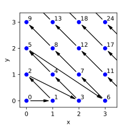
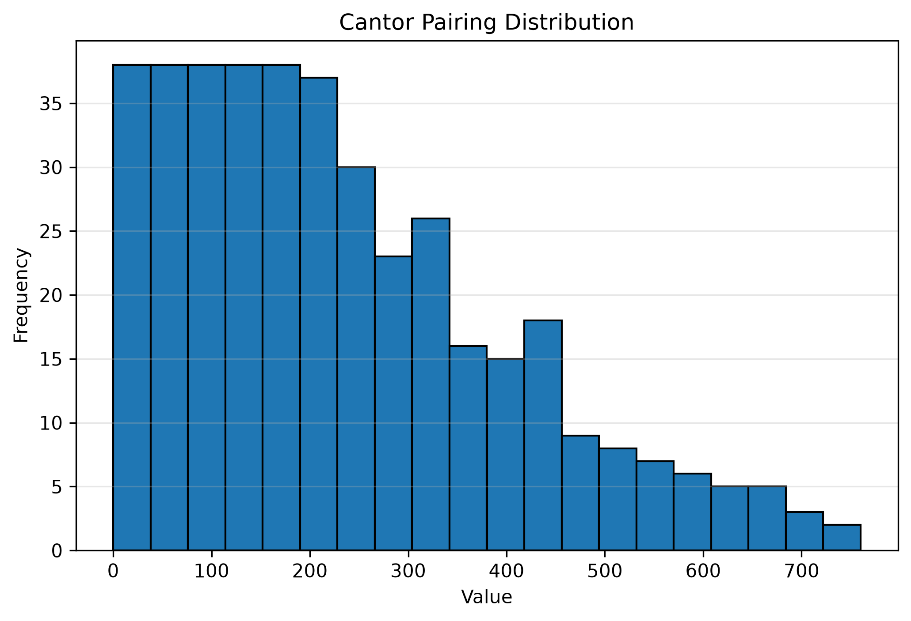
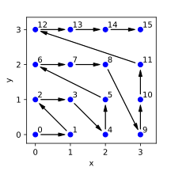
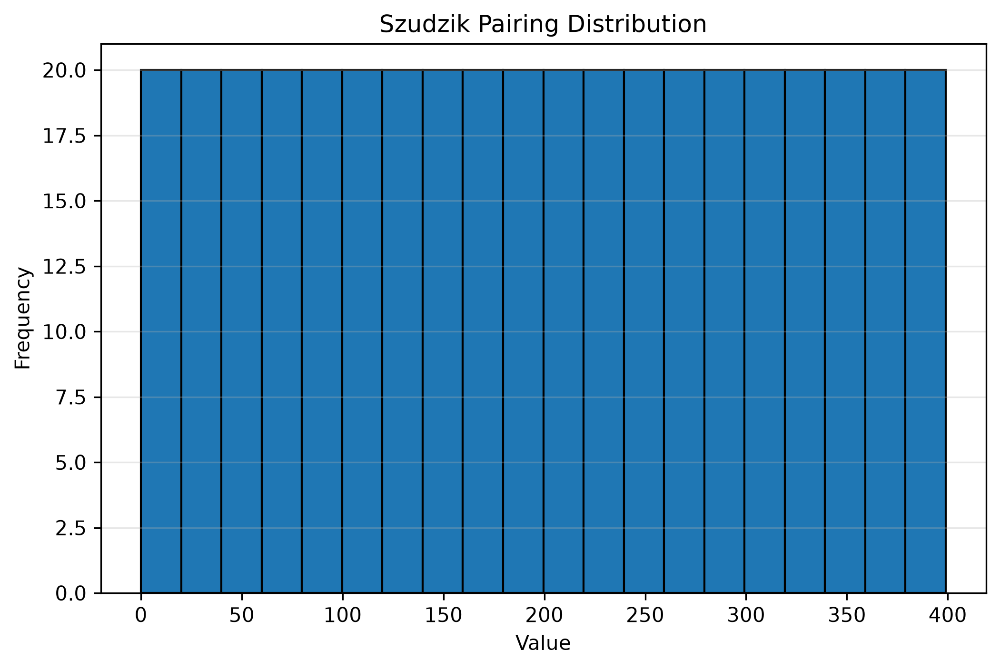

State machines, dynamic multi-dispatch, and pairings of natural numbers
Table of Contents
In this post I expose a function that performs function dispatch based
on more than one enum value in C++.
Recently at work I had to implement a finite state machine in C++20.
By definition, state machines must transition based on the current
state and an input symbol. This requires a mechanism to make a
runtime decision based on more than one parameter, i.e., a
multi-dispatch facility. The language offers well-known approaches
to do so when the decision is based on type-level information (via
std::variant and std::visit or the good old OOP visitor pattern).
When it comes to enum values, however, the language and the standard
library provide nothing of higher level than switch statements and
chaining of if/else statements.
The solution I will present for this problem makes use of some maths
and metaprogramming. After presenting the solution for the binary case
(sufficient for implementing a state machine), I will present its full
generalization to dynamic dispatch based on an arbitrary number of
enum values.
Problem setup
In order to have something concrete in mind, we will use the finite state machine (FSM) described by the transition table below.
| State\Event | a | b | c |
|---|---|---|---|
| A (initial) | A | B | C |
| B | B | C | D |
| C | C | B | D |
| D (final) | - | - | - |
A dash ('-') is used to indicate that there are no transitions from
the (state, input) pair of the given row and column. Reaching such
transitions is considered an error. Alternatively, we could make an
error state and have several final states. Representing errors in one
way or the other would not affect our multi-dispatch solution, so we
will not be wasting any more time on the finer details of the FSM
construction.
The enum types for this state machine are defined as follows
enum class states : std::uint16_t { A, B, C, D }; enum class inputs : std::uint32_t { a, b, c };
A naive solution can make use of nested conditionals to choose a behavior based on the values of state and input:
int dispatch_nested(inputs x, states y) { switch (x) { case inputs::a: switch (y) { case states::A: return a(); case states::B: return b(); case states::C: return c(); case states::D: return d(); default: return handle_error(); } case inputs::b: switch (y) { case states::A: return f(); case states::B: return g(); case states::C: return h(); case states::D: return i(); default: return handle_error(); } case inputs::c: switch (y) { case states::A: return k(); case states::B: return l(); case states::C: return a(); case states::D: return g(); default: return handle_error(); } default: return handle_error(); } }
But this has a couple potential issues:
- Maintainability. The
enumtypes in the example enumerate a short list of values. Some FSMs that show up in practice would not fit as nicely in the page. Regardless, my initial solution was this simple. Yet in the end I found not having a construct that clearly separates dispatching logic from business logic to be a maintainability burden. - Suboptimal? Maybe. In all honesty, I have not played with
(profiled)
switchoptimizations as much as other people have. But in this post I want to experiment with branching based on a single value that encodesstateandinput, instead of sequentially branching based on individualenumvalues. Additionally, it would be nice for these encoded values to be densely distributed since this encourages the compiler to lower theswitchto a compactly represented jump table.
An incomplete solution
We begin designing the solution by specifying the signature of the
function that performs dynamic dispatch over enum values, and
showing one possible way to use this function to implement the FSM of
the previous section.
The signature of the dispatching function is
template <typename StateT, typename InputT, typename F> requires std::is_enum_v<StateT> and std::is_enum_v<InputT> constexpr auto dispatch_enum(F&& f, StateT state, InputT input) -> decltype(std::forward<F>(f)(enum_values<StateT{}, InputT{}>{})) {
Note. The enum_values tag lifts the values enumerated by StateT
and InputT into types — basically a type alias to an
std::integral_constant of a tuple-like type.
The previously described FSM can be implemented using dispatch_enum
in the following manner:
struct fsm { void operator()(auto) { throw std::domain_error{"invalid transition"}; } void operator()(enum_values<states::A, inputs::a>) { s = states::A; std::cout << "(A, a) -> A\n"; } void operator()(enum_values<states::A, inputs::b>) { s = states::B; std::cout << "(A, b) -> B\n"; } void operator()(enum_values<states::A, inputs::c>) { s = states::C; std::cout << "(A, c) -> C\n"; } void operator()(enum_values<states::B, inputs::a>) { s = states::B; std::cout << "(B, a) -> B\n"; } void operator()(enum_values<states::B, inputs::b>) { s = states::C; std::cout << "(B, b) -> C\n"; } void operator()(enum_values<states::B, inputs::c>) { s = states::D; std::cout << "(B, c) -> D\n"; } void operator()(enum_values<states::C, inputs::a>) { s = states::C; std::cout << "(C, a) -> C\n"; } void operator()(enum_values<states::C, inputs::b>) { s = states::B; std::cout << "(C, b) -> B\n"; } void operator()(enum_values<states::C, inputs::c>) { s = states::D; std::cout << "(C, c) -> D\n"; } [[nodiscard]] constexpr bool done() const { return s == states::D; } constexpr void transition(inputs e) { dispatch_enum(*this, s, e); }; states s{states::A}; };
Input is fed to the state machine using the fsm::transition
function.
auto f = fsm{}; f.transition(inputs::b); f.transition(inputs::b); f.transition(inputs::c); assert(f.done());
From both the signature of dispatch_enum and its expected usage we
can come up with a rough plan to implement dispatch_enum. We will
divide the algorithm into two parts: compile time and runtime work.
- At compile time
- List the values enumerated by
StateTandInputT, denote themstatesandinputs, respectively. - Map each value in
statesto a distinctintegral. Do the same withinputs(one input and one state may share a mapping value). Denote that mapping function byu. - Obtain the cartesian product of the lists of
integralvalues from the previous step. Encode each pair in the cartesian product to a unique
integralusing an encoding functione. Denote the resulting list byencodings.Note. The last three steps can be summarized in a mathematical formula as obtaining the set of
encodingsgiven by\[\{ e(u(state), u(input)) : state \in StateT, input \in InputT\}.\]
- Construct a dispatching mechanism (
switch) based on a single runtime value, using the values inencodingsas the discriminants (values associated tocaselabels). Inside each
caseblock, where the associated discriminantdis known at compile time, use the inverse of the encoding functioneand the inverse ofuto obtain compile time values(state, input)such thate(u(state), u(input)) = d. Immediately after, invoke the argument functionfusing anenum_valuestag constructed fromstateandinput.Note. The inverses of
eanduexist because of the "unique" and "distinct" requirements in their defining wordings (at steps 1.4 and 1.2, resp.).
- List the values enumerated by
- At runtime
- Obtain the encoding of the input arguments
encoded = e(u(state), u(input)). - Dispatch using
encodedas the sole argument on which branching is based.
- Obtain the encoding of the input arguments
The enumeration of values enumerated by an enum in step 1.1 can be
obtained in a variety of ways. I chose to use the
magic_enum::enum_values function from the infamous magicenum
library. I think that library allows me to provide the cleanest API
in the pre reflection era (recall the solution is constrained to
C++20).
The function u of step 1.2 can be a static_cast from an enum to
its std::underlying_type_t. Its inverse, which is required for step
1.6, is the construction of an enum from a value of its underlying
type — possible via brace-initialization since C++17, see P0138.
For the metaprogramming required to do most of the compile time work as well as for the generation of the dispatching logic from a single encoding value, I chose to use the metaprogramming library Boost.Mp11.
The only remaining blank is the encoding function e. Here is where
the maths explained in the next chapter comes in. Leaving the
definition of the encoding function in suspense for now, the algorithm
just described can be written as follows
template <typename StateT, typename InputT, typename F> requires std::is_enum_v<StateT> and std::is_enum_v<InputT> constexpr auto dispatch_enum(F&& f, StateT state, InputT input) -> decltype(std::forward<F>(f)(enum_values<StateT{}, InputT{}>{})) { // Alias to a metafunction for steps 1.1 and 1.2 using to_integral_values = boost::mp11::mp_compose<mp_enum_to_enum_values, mp_enum_values_to_underlying>; // Steps 1.1 and 1.2 using integral_states = to_integral_values::fn<StateT>; using integral_inputs = to_integral_values::fn<InputT>; // Steps 1.3 and 1.4 with metafunction for encoding `e` as // mp_e_???. using encoded_pairs = boost::mp11::mp_product<mp_e_???, integral_states, integral_inputs>; // Helper for step 1.5 using max_code = boost::mp11::mp_max_element<encoded_pairs, boost::mp11::mp_less>; using encoded_type = max_code::value_type; // Step 2.1 with runtime encoding `e` as e_??? encoded_type encoded = e_???(static_cast<std::underlying_type_t<StateT>>(state), static_cast<std::underlying_type_t<InputT>>(input)); // Step 1.5 at compile time with mp_with_index // Step 2.2 at runtime boost::mp11::mp_with_index<max_code>(encoded, [&](auto i) { // Step 1.6 with compile time inverse of encoding `e` as // e_???_inv constexpr auto decoded_pair = e_???_inv<std::underlying_type_t<StateT>, std::underlying_type_t<InputT>>(static_cast<encoded_type>(decltype(i)::value)); std::forward<decltype(f)>(f)( enum_values<StateT{decoded_pair.first}, InputT{decoded_pair.second}>{}); }); }
Completing the solution: encoding pairs
In order to fill the missing blanks in Listing 1 , we need to define
an encoding function, that is, an invertible function which maps two
integral numbers into one integral value. This task requires some
math. To simplify the problem, we will disregard negative values
(i.e., we will work with unsigned integral).
If we ignore the fact that computers work with fix-width integers,
then we could consider the (unsigned) underlying type of an enum to
be the set of natural numbers \(\mathbb{N}\) (\(0\) included). This
allows us to express the encoding problem in mathematical terms as the
problem of finding an invertible function from the set of pairs of
natural numbers \(\mathbb{N} \times \mathbb{N}\) to \(\mathbb{N}\).
Functions with these characteristics are well-known objects in mathematics called pairing functions. There are many pairing functions. I considered the following:
Pairing based on the Fundamental Theorem of Arithmetic (FTA). This pairing function uses the fact that any integer greater than \(1\) has a unique representation as a product of powers of primes. Such a pairing \(f\) can be defined as
\[ f : \mathbb{N} \times \mathbb{N} \to \mathbb{N},\quad f(a,b) := 2^a 3^b. \]
After staring at the definition of \(f\) for a while, it is clear that we cannot use this pairing for at least two reasons:
- First, the range of \(f\) is too sparse. Two numbers in the range of \(f\) have a gap between them of at least a factor of \(2\) between them. This sparsity is unlikely to encourge the emision of jump tables.
The second problem is related to the finite nature of computers. If we worked with
std::uint64_t, trouble would arise when the sum of theenumvalues \(a\) and \(b\) being mapped is equal to or greater than \(64\). This occurs because\[ f(a,b) \geq 2^a3^b \geq 2^{a+b} \gt 2^{64}-1 \]
implies
std::uint64_tis overflown! \(\mathbb{N} \neq\)std::uint64_t.(For those interested in the inverse \(f^{-1}\), I recommend the introductory chapters on recursive functions in Computability and Logic by Boolos, Burgess, & Jeffrey 5th ed)
The Cantor pairing function can be visualized in the a 2D graph as a walk through the diagonals of the graph.

Figure 1: Cantor pairing function (image from drhagen's blog)
Hopefully it is clear from the picture that the gap between subsequent steps of the walk does not increase by powers of \(2\), making the Cantor pairing not as prone to overflow as the FTA pairing. To get an impression of the distribution of the range of the Cantor pairing, the figure below shows the distribution of the encodings of all pairs in the set \(S := \{(x, y) \in \mathbb{N} : x, y \lt 20\}\).

Figure 2: Distribution of range of Cantor pairing
Even though we are only plotting the first \(400\) values (in the \(L_{\infty}\) metric w.r.t. \((0,0)\)), notice that the encodings reach values beyond \(700\). The gap between encodings becomes larger as the encodings themselves attain larger values. Again, sparsity might be problematic to encourage the generation of jump tables.
The Szudzik pairing function, like the Cantor pairing, can be visualized as a walk through a graph. In this case the walk can be seen as tracing the perimeter of increasingly larger squares.

Figure 3: Szudzik pairing function (image from drhagen's blog)
The approach of Szudzik achieves a very dense, uniformly distributed range, which makes it a good fit for our needs. The picture below shows the distribution of the image of the set \(S\) (used for Figure 2) under Szudzik pairing function.

Figure 4: Distribution of range of Szudzik pairing
Szudzik pairing formula reads
\begin{equation*} s(x, y) := \begin{cases} x + y^2 &\text{if } y \ge x\\ x^2 + x + y&\text{otherwise} \end{cases}, \end{equation*}and this is how it looks implemented in C++
template <std::unsigned_integral T, std::unsigned_integral S> constexpr unsigned_arithmetic_result_t<T, S> szudzik_pair(T x, S y) { return y > x ? x + y * y : x * x + x + y; }
Note. unsigned_arithmetic_result_t is similar to
std::common_type_t in spirit. It is basically the smallest unsigned
integral type that can accommodate for the result of operations
between T / S, T / T, and S / S. Enabling
-Wsign-conversion makes the return statement explode due to the
usual arithmetic conversions. But I am too lazy to do the (extensive)
proof by cases that I think could get rid of -Wsign-conversion
warnings for any T and S.
The inverse of the Szudzik pairing is given by
\begin{equation*} s^{-1}(z) := \begin{cases} (z - (\lfloor \sqrt{z} \rfloor)^2, \lfloor \sqrt{z} \rfloor) &\text{if } z - (\lfloor \sqrt{z} \rfloor)^2 < \lfloor \sqrt{z} \rfloor \\ (\lfloor \sqrt{z} \rfloor, z - (\lfloor \sqrt{z} \rfloor)^2 - \lfloor \sqrt{z} \rfloor) &\text{otherwise} \end{cases}, \end{equation*}which is implemented by
// need for constexpr template <std::unsigned_integral T> constexpr T isqrt(T x) { T out{}; for (; (out + 1) * (out + 1) <= x; out++); return out; } template <std::unsigned_integral T, std::unsigned_integral S, std::same_as<unsigned_arithmetic_result_t<T, S>> I> constexpr std::pair<T, S> szudzik_unpair(I x) { // Cannot use variables for common subexpressions due to constexpr // constraints: // // q = isqrt(x) // l = x - isqrt(x) * isqrt(x) // Casts shouldn't cause a narrowing issue here, as we have // already checked I == unsigned_arithmetic_result_t<T, S>. Moreover, we // know the values come from a szudzik_pair function so the // decomposition lies in the correct range of values for T and S return (x - isqrt(x) * isqrt(x)) < isqrt(x) ? std::pair{static_cast<T>(x - isqrt(x) * isqrt(x)), static_cast<S>(isqrt(x))} : std::pair{ static_cast<T>(isqrt(x)), static_cast<S>((x - isqrt(x) * isqrt(x)) - isqrt(x))}; }
Here we had to implement our own unsigned integral approximation of
the square root and take some precautions to preserve constexpr, but
nothing too crazy.
Filling the missing blanks at this point is just a matter of programming, I will leave the full solution in this Compiler Explorer link.
Beyond the solution: going variadic
Given the impossibility of counting the number of elements of infinite sets using enumeration techniques, the existence of an invertible function between two sets is used to determine if the sets have the same "size". When an invertible function between sets \(A\) and \(B\) exists, we annotate it as \(A \cong B\).
Pairing functions are often introduced in mathematics with the purpose of demonstrating \(\mathbb{N} \cong \mathbb{N} \times \mathbb{N}\). Some authors quickly follow this proof with a generalization: for any finite number of factors \(\mathbb{N} \times ... \times \mathbb{N} \cong \mathbb{N}\).
I will now present a slightly informal overview of the proof of
\(\mathbb{N} \times ... \times \mathbb{N} \cong \mathbb{N}\) when the
number of factors is greater than \(2\), assuming some pairing function
\(e : \mathbb{N} \times \mathbb{N} \to \mathbb{N}\) exists — which we
now know it does from the previous chapter. The proof requires
constructing an invertible function between \(\mathbb{N}\) and
\(\mathbb{N} \times ... \times \mathbb{N}\). The encoding function we
will use for the variadic solution of the enum dispatching problem
is the same exact function that concludes this proof.
First, I will present the case for \(3\) factors (\(\mathbb{N} \times \mathbb{N} \times\mathbb{N}\)) and \(4\) factors (\(\mathbb{N} \times \mathbb{N} \times\mathbb{N} \times \mathbb{N}\)) to develop some intuition. Later, I will generalize to an arbitrary number of factors.
If we have a pairing function \(e : \mathbb{N} \times \mathbb{N} \to \mathbb{N}\), then we can construct a function
\[e' : \mathbb{N} \times \mathbb{N} \times \mathbb{N} \to \mathbb{N},\quad e'(x, y, z) := e(e(x, y), z).\]
Since \(e\) is invertible, we can define the inverse of \(e'\) by
\[e'^{-1} : \mathbb{N} \to \mathbb{N} \times \mathbb{N} \times \mathbb{N},\quad e'^{-1}(u) := (\pi_0(e^{-1}(\pi_0(e^{-1}(u)))), \pi_1(e^{-1}(\pi_0(e^{-1}(u)))), \pi_1(e^{-1}(u))).\]
where
\[\pi_0(x, y) := x \text{ and } \pi_1(x, y) := y.\]
This concludes the proof of \(\mathbb{N} \cong \mathbb{N} \times \mathbb{N} \times \mathbb{N}\), but richer insights come from some further massaging of the formulas.
The definition of \(e'^{-1}\) above is quite a mouthful. This is a side-effect of the noise introduced by the projections \(\pi_i\) scattered all over the place. If we rewrite it using a function \(c\) that appends an element to an \(n\) tuple, yielding an \(n+1\) tuple, then we can simplify its definition to
\begin{equation} e'^{-1}(u) := c(e^{-1}(\pi_0(e^{-1}(u))), \pi_1(e^{-1}(u))). \end{equation}Similarly, we could rewrite the definition of \(e'\) using the inverse of \(c\). The function \(c^{-1}\) takes as input an \(n\) tuple and yields a pair. The first component of the resulting pair is an \(n-1\) tuple that corresponds to the first \(n-1\) components of the input \(n\) tuple. The second component of the resulting pair is the last component of the input \(n\) tuple. Now the definition of \(e'\) can be rewritten as
\begin{equation} e'(x, y, z) := e(e(\pi_0(c^{-1}(x, y, z))), \pi_1(c^{-1}(x, y, z))). \end{equation}Now it is clearer to see the structural similarity between \(e'\) and its inverse \(e^{-1}\). In Equation 2, \(e'\) first destructs the input tuple into smaller parts (via \(c^{-1}\)), then encodes (via \(e\)). In Equation 1 , \(e'^{-1}\) first decodes (via \(e^{-1}\)), then constructs a larger output tuple (via \(c\)). We will now proceed to the case for \(4\) factors and see if the same patterns emerge.
A function \(e'' : \mathbb{N} \times \mathbb{N} \times \mathbb{N} \times \mathbb{N} \to \mathbb{N}\) from the pairing function \(e\) can be constructed as follows
\begin{align} e''(w, x, y,z) &:= e(e(e(w, x), y), z)\\ &= e(e'(w, x, y), z) \notag \\ &= e(e'(\pi_0(c^{-1}(w,x,y,z))), \pi_1(c^{-1}(w,x,y,z))). \notag \end{align}The first expression in Equation 3 seems to be the emergence of an accumulating or folding pattern. The last two equalities relate \(e''\) with the function \(e'\) just developed.
It is evident, from putting the last equality of Equation 3 side by side with Equation 2, that the common pattern is that of (1) destruct the input tuple via \(c^{-1}\); (2) encode a smaller number of elements via an encoding function that works for \(n-1\), where \(n\) is the number of components in the input tuple; and (3) use one final encoding via \(e\).
The inverse of \(e''\) is
\begin{equation} e''^{-1}(u) := c(e'^{-1}(\pi_0(e^{-1}(u))), \pi_1(e^{-1}(u))). \end{equation}Putting Equation 4 and Equation 1 side by side reveals they are, actually, quite similar too.
With these structural observations taken into account, we procede to write the variadic cases:
\begin{equation} e^{n}(x_1, ..., x_n) := \begin{cases} x_1 &\text{if } n = 1\\ e(e^{n-1}(\pi_{0}(c^{-1}(x_1, ..., x_n))), \pi_{1}(c^{-1}(x_1, ..., x_n))) &\text{otherwise} \end{cases} \end{equation}and its inverse
\begin{equation} e^{-n}(u) := \begin{cases} u &\text{if } n = 1\\ c(e^{n - 1}(\pi_0(e^{-1}(u))), \pi_1(e^{-1}(u))) &\text{otherwise} \end{cases}. \end{equation}
Using sudzik_pair from Listing 2 in place of \(e\), implementing the
variadic version is not very complicated. We achieve this by adding
two new overloads to szudzik_pair, as shown below.
template <std::unsigned_integral T> constexpr T szudzik_pair(T x) { return x; } template <std::unsigned_integral T, std::unsigned_integral U, std::integral... Ts> constexpr unsigned_arithmetic_result_t<T, Ts...> szudzik_pair(T x, U y, Ts... xs) { return szudzik_pair(szudzik_pair(x, y), xs...); }
The inverse requires some extra work. First, we need to use some
metaprogramming to recover the list of encoded types in the exact
order they were encoded. Second, we want to provide an API that does
not require the user to wrap the variadic arguments into a type list.
For the latter purpose, we rename sudzik_unpair function from
Listing 3 into sudzik_unpair__, and use szudzik_pair to name a
convenience function that wraps its template arguments in a type list
before invoking the actual inversion logic.
template <std::unsigned_integral T> constexpr T szudzik_unpair__(T i) { return i; } constexpr auto szudzik_unpair_(std::unsigned_integral auto x) { constexpr auto N = boost::mp11::mp_size<ts>::value; static_assert(N > 0); using fully_decoded = boost::mp11::mp_back<ts>; if constexpr (N == 1) { return tup<fully_decoded>{szudzik_unpair__<fully_decoded>(x)}; } else /* constexpr */ { using ts_tail = boost::mp11::mp_pop_back<ts>; using decoded_unsigned_arithmetic_result_t = boost::mp11::mp_fold<boost::mp11::mp_pop_back<ts_tail>, boost::mp11::mp_back<ts_tail>, unsigned_arithmetic_result_t>; return szudzik_unpair_<ts_tail>( p<0>(szudzik_unpair__<decoded_unsigned_arithmetic_result_t, fully_decoded>(x))) + tup<fully_decoded>{ p<1>(szudzik_unpair__<decoded_unsigned_arithmetic_result_t, fully_decoded>(x))}; } } template <std::unsigned_integral T, std::integral... Ts> constexpr tup<T, Ts...> szudzik_unpair(std::unsigned_integral auto x) { return szudzik_unpair_<boost::mp11::mp_list<T, Ts...>>(x); }
In the listing above, tup is a literal type otherwise similar
std::tuple. The operator+ is tuple concatenation. The projection
of the i component of an object t of type tup is computed by
p<i>(t).
At last, we can implement a variadic dispatch_enum using a similar
approach to that of the binary case (Listing 1). The main difference
being an extra step, performed before any other step, that creates a
type list out of the enum types — this simplifies metaprogramming
with Boost.Mp11.
template <typename F, typename... Enums> requires(std::is_enum<Enums>::value and ...) constexpr auto dispatch_enum(F&& f, Enums... enums) -> decltype(std::forward<F>(f)(enum_values<Enums{}...>{})) { using ts = boost::mp11::mp_list<Enums...>; using ts_integral_values = boost::mp11::mp_transform_q< boost::mp11::mp_compose<mp_enum_to_enum_values, mp_enum_values_to_underlying>, ts>; using encoded_pairs = boost::mp11::mp_apply<mp_szudzik_pair_over_product, ts_integral_values>; using max_code = boost::mp11::mp_max_element<encoded_pairs, boost::mp11::mp_less>; using encoded_type = max_code::value_type; encoded_type encoded = szudzik_pair(static_cast<std::underlying_type_t<Enums>>(enums)...); // Here `encoded` may have been turned into an int due to unsigned_arithmetic_t. // -Wsign-conversion will yell because mp_with_index converts to // std::size_t. But we know we are operating with unsigned numbers (problem // restriction) return boost::mp11::mp_with_index<max_code>( static_cast<std::size_t>(encoded), [&](auto i) { // decltype(i)::value_type == std::size_t, but we know it fits in // the range of encoded_type (since it is <= max_code) constexpr auto decoded_pair = szudzik_unpair<std::underlying_type_t<Enums>...>( static_cast<encoded_type>(decltype(i)::value)); return [&]<std::size_t... Is>(std::index_sequence<Is...>) { return std::forward<F>(f)( enum_values<Enums{p<Is>(decoded_pair)}...>{}); }(std::make_index_sequence<sizeof...(Enums)>{}); }); }
The complete solution is available in Compiler Explorer.
Conclusion
Should this have a conclusion? This was just me showing off something I think is cool. Using math tricks to solve problems is always cool. People claiming that math is not needed for programming do not know what they are missing.